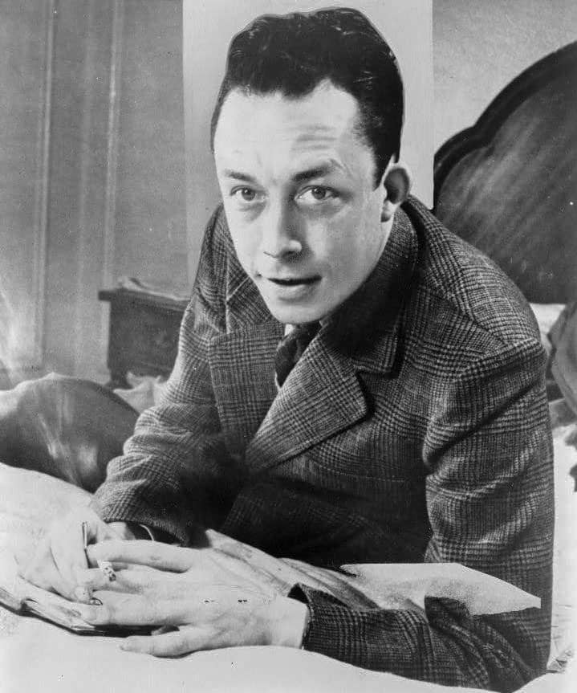

"La vida no tiene sentido pero vale la pena vivir, siempre que reconozcas que no tiene sentido"
Albert Camus (Mondovi, hoy Dréan, Argelia francesa, 7 de noviembre de 1913-Villeblevin, Francia, 4 de enero de 1960) fue un novelista, ensayista, dramaturgo, filósofo y periodista francés nacido en la Argelia francesa. Su pensamiento se desarrolla bajo el influjo de los razonamientos filosóficos de Schopenhauer, Nietzsche y el existencialismo alemán.
Se le ha atribuido la conformación del pensamiento filosófico conocido como absurdismo, si bien en su texto «El enigma» el propio Camus reniega de la etiqueta de «profeta del absurdo». Se le ha asociado frecuentemente con el existencialismo, aunque Camus siempre se consideró ajeno a él.2 Pese a su alejamiento consciente con respecto al nihilismo, rescata de él la idea de libertad individual.
Formó parte de la resistencia francesa durante la ocupación alemana, y se relacionó con los movimientos libertarios de la posguerra. En 1957 se le concedió el Premio Nobel de Literatura por «el conjunto de una obra que pone de relieve los problemas que se plantean en la conciencia de los hombres de la actualidad».